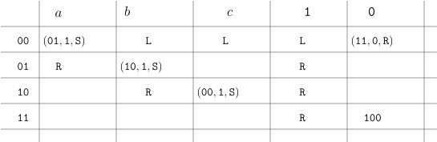

import Section from "~/components/Section";
import Paragraph from "~/components/Paragraph";
import Container from "~/components/Container";
import Carousel from "~/components/Carousel";
import NumberedTitle from "~/components/NumberedTitle";
const Article = () => {
  return (
    <Container>
      <Section
        count={45}
        title_gr="Die universelle Turingmaschine"
        title_en="Turing encoding"
        number={7.4}
        counter="DefCtr"
        counter="ExoCtr"
        path="/lecture-notes45.tsx">
        <div id="link-to-toc">
          <a href="../vorlesungsskript">
            Inhaltsverzeichnis
          </a>
          <a href="07-03-Turing-variants">
            &lt;&lt; Kapitel 7.3
          </a>
        </div>
        <div
          id="link-to-overview"
          style="text-align: end">
          <a href="/">
            zur Kursübersicht
          </a>
          <a href="07-05-Turing-universal">
            Kapitel 7.5 &gt;&gt;
          </a>
        </div>
        <div id="rightSideWrapper">
          <div class="content">
            <div class="chapter">
              <div class="subChapter">
                <h1 class="hidden-title">
                  <span class="subChapterTitle">
                    7.4 
                    Die universelle Turingmaschine
                  </span>
                </h1>
                <Paragraph>
                  Wir haben mit der Turingmaschine ein einfaches aber doch sehr mächtiges Modell einer
                  Rechenmaschine kennengelernt.
                  Sie haben vielleicht mittlerweile - auch durch Ihre Programmiererfahrung - das Gefühl, das man
                  im Prinzip alles, was
                  man überhaupt programmieren kann, auch auf einer Turingmaschine hinkriegt.
                  Versetzen Sie sich nun in die Lage der Menschen vor ungefähr 100 Jahren. Damals gab es durchaus
                  Rechenmaschinen.
                  Maschinen zum Addieren und sogar zum Multiplizieren gibt es schon seit
                  dem 17. Jahrhunder (
                  <a href="https://en.wikipedia.org/wiki/Mechanical_calculator">
                    &ensp;Wikipedia:
                    Mechanical calculator{" "}
                  </a>
                  ).
                  Leider musste man für jede Aufgabe eine neue Maschine erfinden und auch bauen. Zahlen addieren?
                  Maschine bauen. Multiplizieren?
                  Neue Maschine bauen. Verschlüsselung brechen? Neue Maschine bauen. Und so weiter.
                </Paragraph>
                <Paragraph>
                  Die Idee einer{" "}
                  <a href="https://en.wikipedia.org/wiki/Mechanical_calculator#Programmable_mechanical_calculators">
                    &ensp;programmierbaren
                    Maschine{" "}
                  </a>
                  ,
                  die erstmals circa 1834 mit Charles Babbage aufkam, ist, dass man neben den Eingabedaten (z.B.
                  die zu multiplizierenden Zahlen) auch
                  die Rechenvorschrift (das Programm) als Eingabe übergibt. Hätte man so eine Maschine, dann
                  müsste man nicht für jede neue Aufgabe
                  eine neue Maschine entwerfen; man könnte{" "}
                  <i>
                    eine
                  </i>
                  {" "}Maschine bauen und sie für die jeweilige
                  Aufgabe{" "}
                  <i>
                    programmieren
                  </i>
                  , indem
                  ihr auf einem separaten Eingabeband die Rechenvorschrift überreicht. Von heute aus gesehen ist
                  diese Idee nicht mehr allzu überraschend, weil
                  diese Maschinen überall anzutreffen sind. Damals aber war es revolutionär. Um dies, zumindest
                  auf dem Papier, in die Realität zu übersetzen,
                  müssen wir zwei Fragen beantworten.
                </Paragraph>
                <ol>
                  <li>
                    Wie können wir eine Rechenvorschrift (d.h. ein Programm) so codifizieren, dass wir es im
                    Prinzip als eine Zeichenkette aufschreiben und einer
                    Maschine übergeben können?
                  </li>
                  <li>
                    Welche Maschine könnte so eine Rechenvorschrift lesen und sie an gegebenen Eingabedaten dann
                    auch ausführen?
                  </li>
                </ol>
                <Paragraph>
                  Es stellt sich heraus, dass wir beide Antworten (beinahe) schon kennen. Eine beliebige
                  Rechenvorschrift können wir, da sind wir uns mittlerweile
                  recht sicher, als Turingmaschine \(M\) implementieren. Diese können wir über einem Alphabet
                  codieren und erhalten ein Wort
                  \(\enc(M)\). Wie tun wir das? Nun ja, auf{" "}
                  <a href="https://turingmachinesimulator.com">
                    &ensp;turingmachinesimulator.com{" "}
                  </a>
                  &ensp;haben wir das
                  bereits getan:
                  eine Turingmaschine mit Alphabet \(\Sigma\) können wir dort als String über dem Alphabet
                  $$\begin&#123;align*&#125;
                  \Sigma \cup \&#123;a,\dots,z,A\dots,Z,0,\dots,9\&#125; \cup \&#123;\texttt&#123;&lt;&#125;, \texttt&#123;-&#125;, \texttt&#123;&gt;&#125;,
                  \texttt&#123;,&#125;, \texttt&#123;_&#125;, \texttt&#123;\n&#125;, \dots\&#125;
                  \end&#123;align*&#125;$$
                  codieren. Codierung ist im Prinzip kein Problem, wir werden aber ein paar Subtilitäten
                  ansprechen.
                </Paragraph>
                <Paragraph>
                  Punkt 2 ist schwieriger. Können wir eine Maschine bauen, die als eingabe (1) die Codierung
                  \(\enc(M)\) einer Turingmaschine und (2) ein Eingabewort
                  \(w \in \Sigma^*\) entgegennimmt und dann die Berechnung \(M(x)\) simuliert bzw. zu dem Ergebnis
                  gelangt, zu dem auch \(M(x)\) gelangen würde?
                  Die Programmierer von{" "}
                  <a href="https://turingmachinesimulator.com">
                    &ensp;turingmachinesimulator.com{" "}
                  </a>
                  &ensp;haben dies
                  offensichtlich geschafft:
                  sie haben eine Maschine "gebaut" (also wohl einen Server gemietet und eine Webseite mit viel
                  Javascript programmiert), der
                  eine Turingmaschine in einer spezifischen Codierung und ein Eingabewort einliest und dann diese
                  simuliert.
                </Paragraph>
                <Paragraph>
                  In diesem Teilkapitel werden wir sehen, wie wir eine Turingmaschine \(M\) über einem
                  fixen, nicht von \(M\) abhängigen Alphabet codieren können.
                  Im nächsten Teilkapitel werden wir uns überlegen, wie man einen Turingmaschinen-Simulator selbst
                  als
                  Turingmaschine implementieren kann. Also eine Turingmaschine \(U\), die als Input Wörter der
                  Form
                  $$\begin&#123;align*&#125;
                  c\#x
                  \end&#123;align*&#125;$$
                  entgegennimmt und dann
                  <ol class="nested">
                    <li>
                      {" "}{" "}
                      <b>
                        ablehnt
                      </b>
                      , falls \(c\) keine gültige Codierung einer Turingmaschine \(M\)
                      ist,
                    </li>
                    <li>
                      ansonsten, falls also \(c = \enc(M)\), dann
                      <ol class="nested">
                        <li>
                          {" "}{" "}
                          <b>
                            akzeptiert
                          </b>
                          {" "}falls \(M(x)\) akzeptiert;
                        </li>
                        <li>
                          {" "}{" "}
                          <b>
                            ablehnt
                          </b>
                          , falls \(M(x)\) ablehnt
                        </li>
                        <li>
                          {" "}{" "}
                          <b>
                            nicht terminiert
                          </b>
                          , falls \(M(x)\) nicht terminiert.
                        </li>
                      </ol>
                    </li>
                  </ol>
                  Falls wir bei \(M\) nicht nur an Akzeptieren / Ablehnen interessiert sind, sondern am Ergebnis der
                  Berechnung,
                  dann hätten wir gerne, dass \(U (\enc(M)\#x)\) am Ende den gleichen Bandinhalt hat wie \(M(x)\) am
                  Ende;
                  hierbei gibt es allerdings eine Schwierigkeit mit den Details der Codierung, die wir gleich
                  ansprechen werden.
                </Paragraph>
                <h3>
                  Die Codierung
                </h3>
                Zuerst müssen wir uns auf ein Eingabealphabet \(\Sigma\) einigen. Im Ernstfall genügt immer \(\Sigma
                = \&#123;0,1\&#125;\), allerdings
                gibt es keinen Grund, für die Definitionen nicht allgemeine endliche Alphabete \(\Sigma\)
                zuzulassen. Wir wollen
                nun ein Codierungsalphabet \(\Lambda\) und eine Codierungsfunktion \(\enc\), so dass
                $$\begin&#123;align*&#125;
                \enc(M) \in \Lambda^*
                \end&#123;align*&#125;$$
                für jede Turingmaschine \(M\) mit Eingabealphabet \(\Sigma\) gilt.
                <Paragraph>
                  {" "}{" "}
                  <b>
                    Erster, zum scheitern verurteilter Versuch.
                  </b>
                  {" "}Sei \(M\) eine Turingmaschine
                  mit Eingabealphabet \(\Sigma\), Arbeitsalphabet \(\Gamma\), Zustandsmenge \(Q\), Startzustand
                  \(\qstart\), akzeptierendem Zustand
                  \(\qaccept\) und Übergangsfunktion \(\delta\).
                  Wir codieren \(M\) wie folgt: wenn
                  $$\begin&#123;align*&#125;
                  \delta(q,x) = (r,y,\texttt&#123;R&#125;) \\
                  \delta(q,y) = (s,z,\texttt&#123;L&#125;) \\
                  \dots
                  \end&#123;align*&#125;$$
                  dann schreiben wir in der Codierung
                  $$\begin&#123;align*&#125;
                  \qstart \# \qaccept \# qxryR \# qyszL \# \dots
                  \end&#123;align*&#125;$$
                  Unser Codierungsalphabet ist also
                  $$\begin&#123;align*&#125;
                  \Lambda := Q \cup \Gamma \cup \&#123;\#, \texttt&#123;L&#125;, \texttt&#123;S&#125;, \texttt&#123;R&#125;\&#125; \ .
                  \end&#123;align*&#125;$$
                  Sehen Sie das Problem? Das Codierungsalphabet ist nicht uniform: wir brauchen, abhängig von der
                  Zustandsmenge \(Q\) und
                  dem Bandalphabet \(\Gamma\) jeweils neue Alphabete. Wir wollen aber ein \(\Lambda\), da für
                  <i>
                    alle
                  </i>
                  {" "}Turingmaschinen
                  mit Eingabealphabet \(\Sigma\) funktioniert.
                </Paragraph>
                <Paragraph>
                  {" "}{" "}
                  <b>
                    Zweiter, erfolgreicher Versuch.
                  </b>
                  {" "}{" "}
                </Paragraph>
                Wir müssen also die Zustandsmenge \(Q\) und die Zeichen \(\Gamma \setminus \Sigma\) erst einmal
                selbst codieren, beispielsweise
                über dem Alphabet \(\&#123;0,1\&#125;\). Die \(\delta\)-Tabelle der Turingmaschine für \(\&#123;a^nb^nc^n\&#125;\)
                <figure>
                  
                </figure>
                würde dann zu folgender Tabelle:
                <figure>
                  
                </figure>
                <Paragraph>
                  Wenn wir dies nun als{" "}
                  <i>
                    ein
                  </i>
                  {" "}Wort in obigen Schema schreiben, können wir für eine
                  Tabellenzelle
                  \(\delta(q,x) = (r,y,R)\) nicht einfach \(qxryR\) schreiben, auch nicht einfach die Codierungen
                  zusammenschreiben:
                  in diesem Falle würde nämlich
                  \(\delta(00,0) = (11,0,\texttt&#123;R&#125;)\) zu \(000110\texttt&#123;R&#125;\) und wir würden nicht mehr erkennen,
                  wo welches
                  Zeichen beginnt und aufhört. Wir brauchen ein Separatorzeichen, beispielsweise ein Komma.
                  Aus Gründen, die später klar werden werden, schließen wir die Codierung der Turingmaschine
                  mit einem \(\texttt&#123;;&#125;\) ab.
                  Die Codierung der obigen Maschine ist dann also
                </Paragraph>
                <pre class="container">
                  00#100#00,a,01,1,S#00,b,L#00,c,L#00,1,L#00,0,11,0,R#01,a,R#01,b,10,1,S#01,1,R#10,b,R#10,c,00,1,S#10,1,R#11,1,R#11,0,100#;
                </pre>
                <Paragraph>
                  In dieser Codierung behalten wir zwei Konventionen bei: wenn eine Regel
                  "fehlt", also beispielsweise für \(\delta(10,a)\) die Zelle leer ist, dann
                  soll das in den Zustand \(\qreject\) führen; wenn in der Zelle
                  nur ein Richtungszeichen, also beispielsweise{" "}
                  <tt>
                    01,1,R
                  </tt>
                  &ensp;steht,
                  dann ist das eine Abkürzung für
                  $$\begin&#123;align*&#125;
                  \delta(01,1) = (01,1,\texttt&#123;R&#125;),
                  \end&#123;align*&#125;$$
                  also
                  <tt>
                    #01,1,01,1,R#
                  </tt>
                </Paragraph>
                <Paragraph>
                  Wir können nun{" "}
                  <i>
                    jede
                  </i>
                  {" "}Turingmaschine
                  über dem Alphabet
                  \(\Sigma\) codieren als Wort über dem Alphabet
                  $$\begin&#123;align*&#125;
                  \Lambda := \writelambda
                  \end&#123;align*&#125;$$
                </Paragraph>
                <div class="well container theorem">
                  <Paragraph>
                    <span class="numbered-title">
                      Definition
                      <NumberedTitle>
                        &ensp;7.4.1{" "}
                      </NumberedTitle>
                      /Beobachtung.
                    </span>
                    &ensp;Zu einem Eingabealphabet
                    \(\Sigma\) definieren wir das{" "}
                    <i>
                      Codierungsalphabet
                    </i>
                    \(\Lambda := \writelambda\),
                    wobei wir annehmen, dass \(\texttt&#123;#&#125;, \texttt&#123;,&#125;, \texttt&#123;L&#125;, \texttt&#123;S&#125;, \texttt&#123;R&#125;,
                    \texttt&#123;;&#125;
                    \not \in \Sigma\). Wir können nun jede Turingmaschine \(M\) mit Eingabealphabet
                    \(\Sigma\) als String \(\enc(M) \in \Lambda^*\) codieren.
                  </Paragraph>
                </div>
                <div class="alert-info container">
                  {" "}{" "}
                  <b>
                    Anmerkungen:
                  </b>
                  {" "}
                  &ensp;das Wort{" "}
                  <i>
                    Codierung
                  </i>
                  {" "}suggeriert, dass wir, gegeben
                  den String \(c = \enc(M)\) die
                  ursprüngliche Turingmaschine \(M\) rekonstruieren können. Das gilt natürlich nur
                  beschränkt: eventuell decodieren wir \(c\) zu einer Maschine \(M'\), die sich
                  von \(M\) in denen Namen der Zustände und der Bandalphabetsymbole unterscheidet. Allerdings
                  stimmen die Funktionen
                  \(f_M: \Sigma^* \rightarrow \&#123;\texttt&#123;accept&#125;, \texttt&#123;reject&#125;, \texttt&#123;undefined&#125;\&#125;\)
                  und
                  \(f_&#123;M'&#125;: \Sigma^* \rightarrow \&#123;\texttt&#123;accept&#125;, \texttt&#123;reject&#125;, \texttt&#123;undefined&#125;\&#125;\)
                  überein.
                </div>
              </div>
            </div>
          </div>
        </div>
      </Section>
    </Container>
  );
};

export default Article;